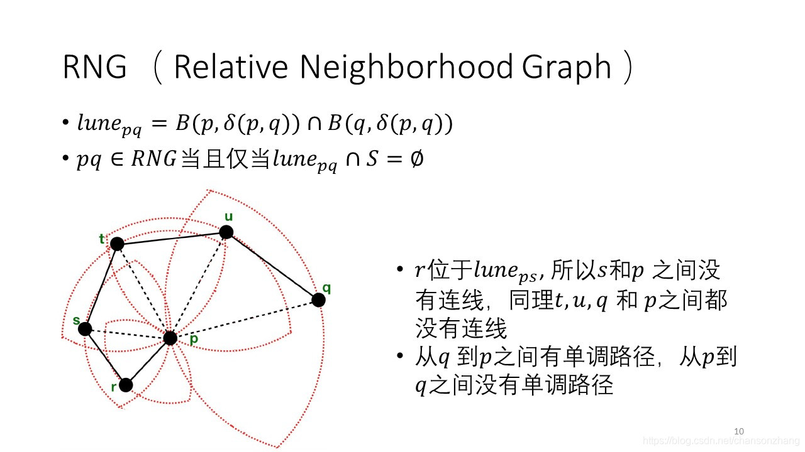
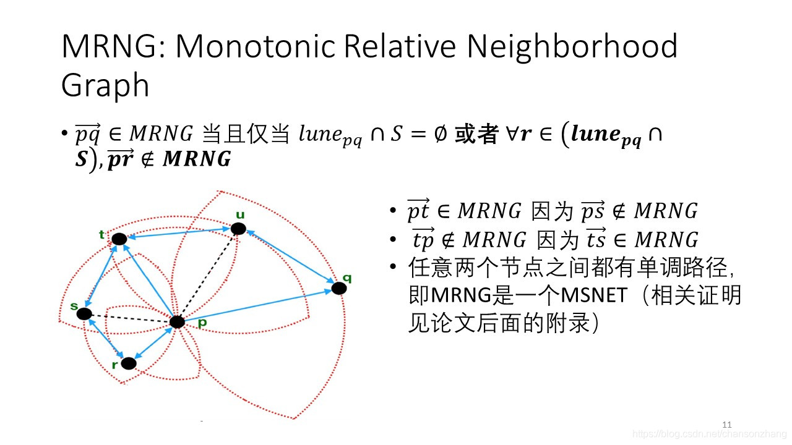

ANNS近似最近邻搜索问题
ANNS的主要思想
搜索可能是近邻的数据项而不再只局限于返回最可能的项目，在牺牲可接受范围内的精度的情况下提高检索效率。
ANNS的分类
基于树的方法（如图a）
随机KD树、R树基于散列的方法（如图b）
局部敏感哈希（LSH）、光谱散列基于量化的方法
产品量化、复合量化基于图的方法（如图c）
NSW、HNSW、FANNG、NSG
其中NSG与SSG都是由同一位作者提出的，两种图的主要思想和构建方法都非常类似，而且SSG的很多改进点都由NSG的缺点引出的。所以，了解NSG有利于SSG的理解。那么下面就来介绍以下NSG等相关知识。
相关研究
单调搜索网络MSNET与单调相对领域图MRNG
- 单调路径Monotonic Path
在给定空间的有限点集S中，p、q为在集合中的两点，且G为定义在S上的图。其中
$$
v_1,v_2…v_k(v_1=p,v_k=q)
$$
为从点p到q的路径上的点，且∀i = 1,…,k−1,δ(,q) > δ(+1,q)随着i的增大， 与q的距离越来越近。
单调搜索网络Monotonic Search Networks (MSNET)
在给定空间的有限点集S中，任意两点p、q之间至少存在一条单调路径。
特性：
强连通图，确保图的连接性
不需要回溯，路径中每一步都更加接近终点q单调搜索网络MSNET与单调相对领域图MRNG
相对邻域图 Relative Neighborhood Graph(RNG)
在给定空间的有限点集S中，当且仅当任意两点p、q的之间的区域 中不包含集合S中的任何点。
其中，
$$
lune_{pq}= B(p,δ(p,q)) ∩ B(q,δ(p,q))
$$单调相对邻域图Monotonic Relative Neighborhood Graph (MRNG)
定义：在给定空间的有限点集S中，满足：
任意两点p、q的区域中不包含集合S中的任何点。（RNG的定义）
或者，若区域中存在的点r，但不属于MRNG
定理：
在给定空间的有限点集S中，在 S 上定 义的 MRNG 是 MSNET 。例子：


NSG存在的一些缺陷
MSNET过于稀疏，导致搜索性能较差
基于ANN的搜索复杂度主要取决于结点的出度、起点到终点的路径长度
(a)(b)(c)分别为MSNET图族的三种不同的图，且(a)->(c)：稀疏度降低
(a)(b)(c)图分别需要7、5、8次计算。
结论：并不是图越稀疏、或者越稠密效率越高，而是存在“最优稀疏度解决途径：图的理论定义->新的msnet图ssg
利用参数描述边缘之间的最大角度，控制图的系数性，探索最佳出度。

规模较大的实际应用中，nsg索引的复杂度依然很高，限制了它的扩展和搜索性能
解决途径：索引算法的设计，产生近似ssg，具有较低的时间复杂度，有利于应用于大规模的项目。
解决办法-SSG
为了解决NSG的一些缺陷，作者提出了新的MSNET图SSG(Satellite System Graph卫星系图)。
SSG的定义

卫星系图Satellite System Graphs (SSG)
定义在有向边集S上，满足，对于任何$vec{pq} $， $vec{pq} $∈ SSG当且仅当Cone($vec{pq} $,α) ∩B(p,δ(p,q))∩S = ∅ 或者∀r ∈ Cone($vec{pq} $,α) ∩B(p,δ(p,q))∩S ≠ ∅，但 ∉SSG。(大白话： pq ∈ SSG当且仅当以pq为轴，α为角直径的圆锥和以p为圆心，pq为半径的球体和有向边集S的交集为空或者该交集中存在点r，但是有向边pr不属于ssg。)
δ(p,q)表示pq之间的距离
B(p,δ(p,q))表示一p为圆心，pq为半径的开球
α ≤ 60◦
Cone($vec{pq} $,α) 表示
在欧几里得空间中，对于任意，Cone(,α) 是以为轴，2α为角直径的圆锥。
δ：角直径
d：物体直径
D：物体距离
构建朴素SSG索引
对于集合S中每一个 p ∈ S 执行以下过程:
- 计算集合S中除p点以外的所有点q(q ∈ S−{p})和p的距离pq
- 按照pq的距离，升序对集合q ∈ S−{p}进行排序，形成列表C
- 按顺序检查是否满足SSG的定义，满足则可加入SSG
例子：
在2维空间中，首先计算与p点的距离，并升序排序。按顺序检查有向边是否可以加入SSG。
- 首先看q点，Cone($vec{pq} $,α) ∩B(p,δ(p,q))∩S = ∅ ，所以有向边pq加入SSG。其他的以此类推。
- 再看r点，检查它的顺序肯定在q之后，s之前。 q ∈ Cone($vec{pq} $α) ∩B(p,δ(p,r))∩S ≠ ∅ ，且SSG，所以不能加入SSG。
- 看s点， r ∈ Cone(,α) ∩B(p,δ(p,s))∩S ≠ ∅ ，但，所以可以加入SSG。
SSG的ANNS特性分析
数据库内查询和非数据库内查询
数据库内查询
返回的是数据库中存在的数据非数据库内查询
返回的是与查询点邻近的数据例子
如上图，设黑点为起始点，红点为查询点。使用贪婪搜索从黑点开始搜索，下一跳应选择黑点的邻居中距离红点最近的点。图a中黑点斜上方的点距离红色查询点更近，而图b中黑点斜下方的点距离红色查询点更近。接着两张图上的查询沿着不同的路径（红色路径）得到了相同的返回结点（红色路径的终点）。
所以，虽然起始点和最终得到的结果完全相同，但是由于查询点与当前点的距离不同，导致使用贪婪搜索，得到的搜索路径完全不同。
数据库内查询
定理1：SSG属于MSNET图族
与同为MSNET图族的MRNG比较：
图(a)为MRNG，图(b)为SSG- 实验显示MRNG的平均出度小于SSG，但平均搜索路径长于SSG。
- 由于MRNG中三角形的最长边必须被移除，所以如图a虚线部分是空白的。而且根据MRNG的定义，对于确定的数据集S，MRNG是确定的，不能根据不同情况进行调节。
- SSG通过边之间的夹角进行裁边，使得边缘分布更加均匀，减少空白区域。通过改变边缘之间的最大夹角α可以控制图的稀疏程度，由此可以根据不同的数据分布调节α，并找到搜索路径长度和出度的平衡点。

非数据库内查询
- 定理3：对于随机分布在欧几里得空间上的有限集S，任意不属于S的查询q，搜索路径上的每一步都是单调的概率为 0.5 +e ,0 < e ≤ 0.5(单调的概率大于0.5)。其中，当 SSG的α ≤ 30◦时 e=1(一定是单调的)。
- 与同为MSNET图族的MRNG比较：
- 从定义来看SSG相对于MRNG的优势与α的大小有关：
- 当α = 60◦时，搜索路径中的任意一步违反单调性的概率小于0.5
- 当α ≤ 30◦时，在数据库和非数据库查询的情况下，保证搜索路径一定是单调的。
- 同时，对于SSG来说，α=60°比α≤30°稀疏很多。对于在非数据库上的查询来说，出度和单调性之间需要权衡（α大，出度小，单调性的概率下降）。不同分布的数据集，最合适的α不同。
- 而MRNG以及它之前的准备工作中（例如生成kNN图），都没有角度约束，所以不具备以上属性。
- 从定义来看SSG相对于MRNG的优势与α的大小有关：
总结：
- SSG可以通过α控制图的稀疏度，针对不同数据集，调节α，生成较为合适的图结构。
- 在非数据库查询中，比MRNG更具有理论上的普遍性。
SSG的实用变体NSSG（ Navigating SSG ）
可导航卫星系图NSSG
生成索引主要步骤
从少量候选集中选择点的邻居：首先建立kNN图。候选集从kNN图上对应点的邻居、邻居的邻居中产生。（NSG：使用贪婪搜索，选择起始点p到q之间搜索路径上的所有点加入候选集）
从候选集中选则边缘的时候使用SSG选边策略
- 且仅仅在此步骤中应用SSG选边策略（参见，建立朴素SSG过程，满足SSG定义即可加入SSG图）
- 在最终构成的图上，设置最大度，防止个别点的度特别大。
确保图的连通性
：DFS扩展算法，添加少量的边，确保图单方向的连通性。（与NSG中此部分类似）
- 随机选择m个导航点（NSG仅选择一个中心点作为导航点）->相比NSG更能适应不同分布的图
- 从每一个导航点出发DFS，分别生成深度优先搜索树。当DFS搜索终止时，把没有链接到树的节点，链接到它们最近的邻居。（同NSG）
P.s.虽然SSG的定义要求0°α60°，但是实际操作中可以将α的范围扩展到0°~90°
搜索
- 与其他基于图的搜索一样，使用贪婪搜索进行搜索。
- 相比NSG的改动：将m个导航点按照与查询点q的距离从小到大排序，从距离查询点q最近的导航点开始查询。
实验分析
搜索性能对比
- 在规模大的数据集上优势明显
SSG对于数据规模不敏感，在高维度上与其他算法差距越来越大 - DPG(Diversified Proximity Graph)和SSG都是使用角度进行选边的算法，但是尤其是在数据规模大的情况下，DPG的性能远低于SSG。原因如下：
DPG不是MSNET
DPG太密集，存在过多无效边 - 由于NSSG的选边策略为搜索路径带来了跟多有效边，虽然度变大了，但使得搜索路径中的跳数变少，进而使得NSSG的性能优于NSG和HNSW。
索引生成性能对比
- 索引尺寸：
由于NSSG和NSG的最大度较小，所以索引尺寸是最小的。虽然HNSW的最大度与前者相同，但是由于HNSW是分层的，所以它的索引尺寸会很大。 - 建立索引的时间：
NSSG建立索引的时间仅次于KGraph，因为KGraph用于建立NSSG的第一步：生成kNN图。但是NSSG的搜索性能远好于KGraph。 - 最耗时的部分是建立kNN图。可以通过在GPU上生成索引或者使用其他更快的算法代替。
参数对性能的影响
- α=60°时，搜索性能最好

核心代码
近似最近邻SSG算子K阶图查询SSGQuery(G, p, q, l)
1 | * 参数：图G |
建立SSG图索引SSGIndexing(D, l, r, s, α)
1 | /** |
If you like this blog or find it useful for you, you are welcome to comment on it. You are also welcome to share this blog, so that more people can participate in it!